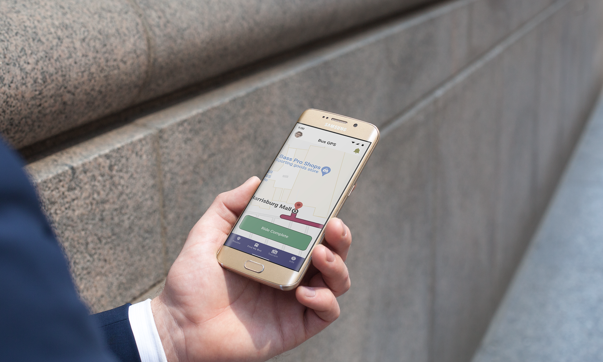

After gathering all of my data from my user interviews as well as my survey, I was able to organize my data into a few different sections including; pleasant points, pain points, items that help with retention, themes, and lastly key insights.
Users need a reliable way to track their buses and have accurate pick-up and drop-off times for their routes. They also need to be notified of any changes affecting their daily schedules and a functioning customer services system where users can input any complaints.
People who regularly use the metro transit system to get from place to place in their daily lives.
An application streamlined to put the user’s needs first when it comes to paying for their ability to ride the bus, as well as giving them the most accurate data in regards to when or where their bus is going to be at any specific time when transit services are active. The application will include the following core features:
An application that will allow users to be able to purchase and use their tickets directly through their phones to get onto the bus. As well as letting them be able to find out where and when their bus will pick them up. It will also let them know about any delays or issues that may occur with their bus.
When it comes to the Capital Area Transit’s metro bus application, despite the current app only being released a few years ago, the app is severely outdated when it comes to its UI design as well as its lack of working links when it comes to essential links such as incident reports. With the lack of an digital ticket/pass system. it severely hinders the transit system’s ability to provide services to their customers.

Before I started doing any designing, I first created a site map with the help of a few users to design the layout of the app. Each section of the app has its own deticated area in which sub areas are included

Here we have a user flow which follows a likely route a user may take during their time using the application.
I started off my designs with a few basic sketches of what the main screens would look like.
After creating the initial sketches I immediately began to work on high-fidelity wireframes for each key section of the app.
After developing the wireframes, I then began development of a working prototype. With adjustments from usability testing, I was able to refine the application into something that could be presented to the client for submission.
Here we have a user flow which follows a likely route a user may take during their time using the application.
Typography
Title Large - Roboto Medium 22px
Title Medium - Roboto 20px
Body - Roboto Regular 16px
Small Body/subtext - Roboto Regular 14px
Tabs - Roboto Regular 12px
Because of the design and features I had included in this rebranding, I was able to increase revenue an additional 66% due to the additional revenue stream added from adding digital tickets and passes, along with the updated User interface which has made it easer for users to be able to find their bus and its current location.
If you like what you see and want to work together, get in touch!
ChristianSuderman@gmail.com